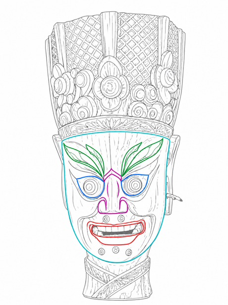

傩公
标注线描图 / 浮雕试样

研究标注线描图 / 0165馆藏
目录
从形态出发，循着线条、比例与表情，逐一进入面具的细节。当前展示的是研究标注图及浮雕试样。
观察
方法
观察面具轮廓、比例及整体表情，建立对对象的初步印象。
放大眉、眼、鼻、口的局部线条，辨识造型和视觉特征。
分区研究面部元素与结构关系，理解构成面具的不同线索。
展厅支持整体旋转、局部放大和二维分区拆解。浮雕深度和拆分方式仅供演示，不代表实物结构。
关于
项目
“面·傩”是一个正在建立的傩面具数字研究与展示项目。这里以已有标注线描资料为起点，探索从图像档案到交互展示的可能。
当前资料和浮雕仅作研究与界面展示试样。图像保留原有标注，模型深度并非实物测量；具体历史、来源与使用权仍需逐项核实。